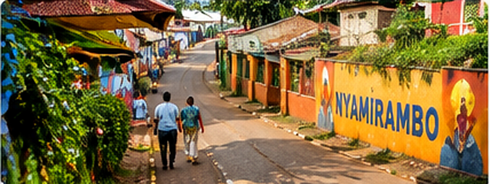
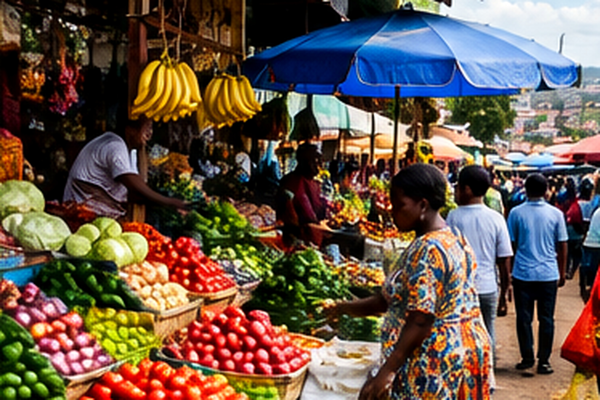
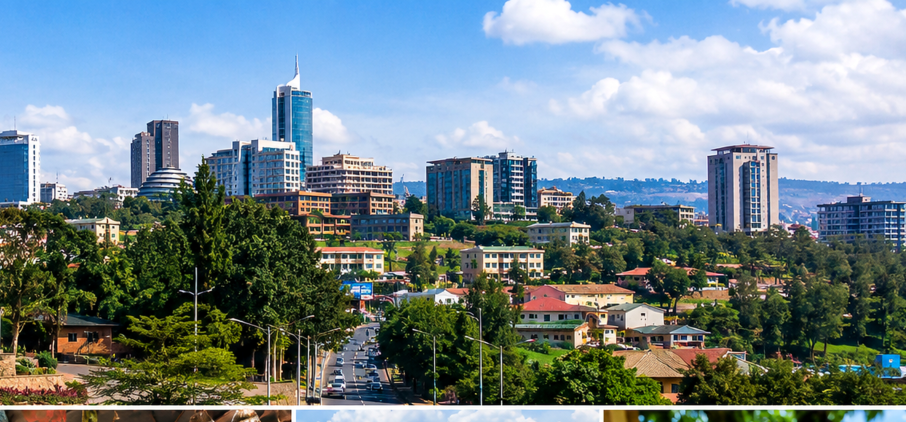

About 2 hours
Kigali City Life Walk
Discover the city’s energy, daily routines, local landmarks and the stories that shape modern Kigali.
10,000 RWFper person
Book walk ↗Walk beyond the guidebook with a local guide. Meet the neighbourhoods, hear the stories and experience the everyday rhythm of Rwanda’s vibrant capital.
Small-group experiences made for curious travellers. Pick a walk and message us to arrange a time that works for you.
Discover the city’s energy, daily routines, local landmarks and the stories that shape modern Kigali.

2–3 hoursExplore one of Kigali’s most lively neighbourhoods, its street life, shops, community and everyday culture.

2–3 hoursGet closer to Rwandan flavours and traditions as you learn about local food, customs and community life.
Choose a city walk starting at Kigali Heights. Open the walking directions for a live route, and confirm the route and timing with your guide before setting off.
Begin at Kigali Heights, then walk toward Downtown Kigali to experience the city’s business streets, local shops and everyday urban life.
Travel on foot from Kigali Heights toward Kimironko Market, where you can discover lively market lanes, fresh produce, everyday shopping and local trading.
Everything you need to plan your Kigali walking experience.
Cancel up to 24 hours in advance for a full refund.
Keep your travel plans flexible — book your spot and pay nothing today. Contact your guide to arrange your reservation.
Remember: the listed itineraries are not suitable for children under 10 years or adults over 70 years.
Average rating: 4.785370349139599 out of 5 stars.
Explore the parts of Kigali many visitors come for: local insight, neighbourhood life and a taste of everyday culture.
Get context from a guide who can help connect landmarks, daily life and the people of Kigali.
Spend time in streets, shops and markets to see more than the usual sightseeing stops.
Make room for questions, local details and memorable photos during your walk.
Rating figures shown in the Important Information section were supplied for this listing. Add only verified guest quotes with permission.
Discover Kigali on Foot is built around the belief that the best way to understand a place is to walk it, listen and connect with the people who make it special.
Your guide will help you explore at a comfortable pace, share context and stories, and make room for questions along the way.
Prices are per person. Message us to confirm your preferred date, group size and any special requests.
Your walk is designed to be welcoming, informative and grounded in local knowledge.
From green hills to bustling streets, there is always something to notice along the way.

Prefer a walk or want to ask about a car-based sightseeing option? Send us a message and we’ll confirm what can be arranged.
Explore local streets, murals, shops and everyday life with a guide.
Ask about walking tours ↗Ask whether a car-based city route with local commentary can be arranged. Price and availability must be confirmed.
Ask about a car tour ↗Discover produce, local shopping and Rwandan food culture on a market-focused visit.
Ask about market tours ↗These are enquiry options, not third-party partner listings. Any car service, transport, schedule and price are subject to confirmation before booking.
Tell us which tour you’re interested in, when you’ll be in Kigali and how many people are in your group. We’ll help you plan the next step.
WhatsApp is the easiest way to ask questions, confirm availability and arrange your tour.
Message us on WhatsApp ↗Send an email